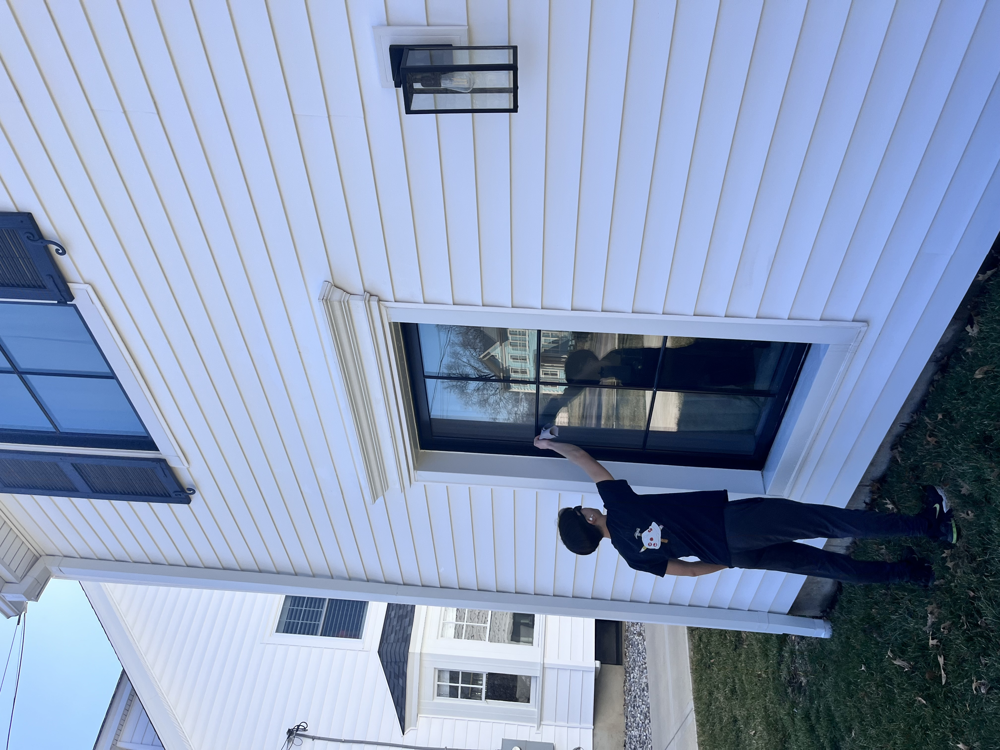
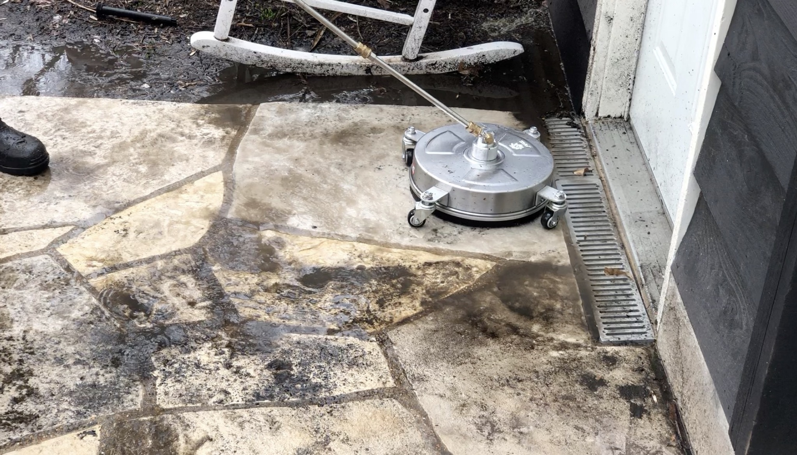
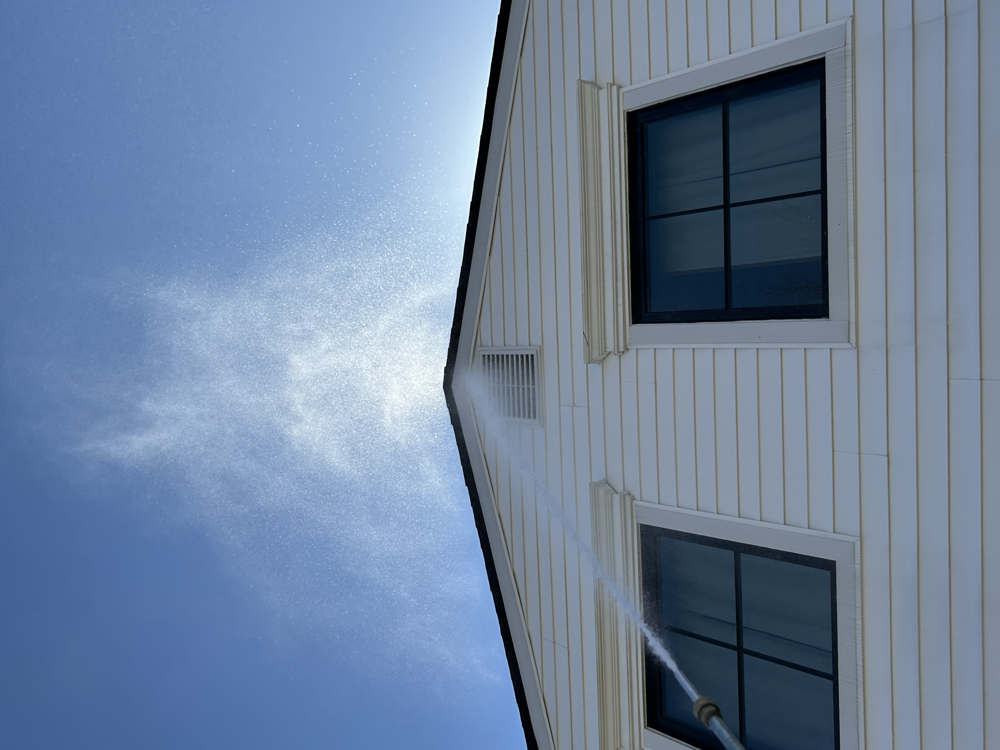
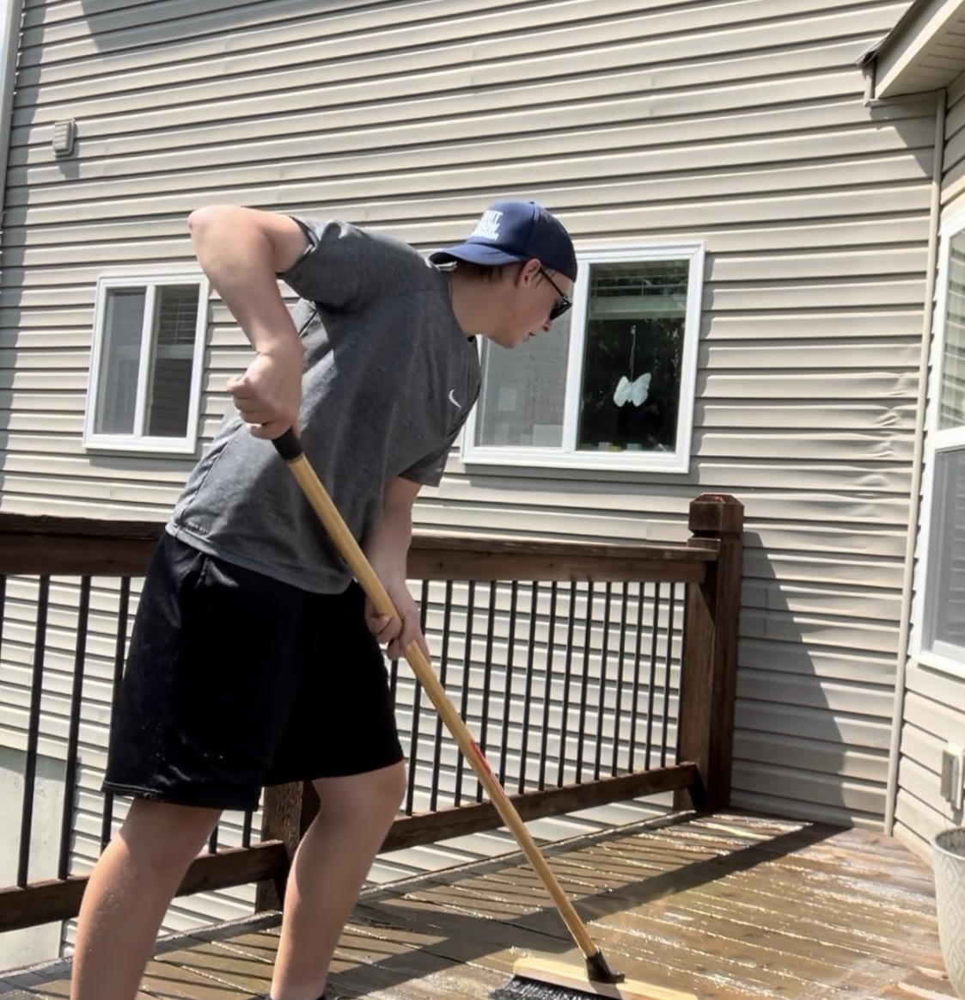

Concrete renewal
Driveways and sidewalks stripped clean of years of grime and weathering.
Services
Expert cleaning solutions tailored for your home, delivered with precision, professionalism, and care. See what we can do for you by filling out our remote quote or texting us!
Window Cleaning
We specialize in restoring your home’s shine from the outside. Our process includes high-definition glass cleaning, frame wiping, and screen dusting, giving you a perfect view without our boots ever touching your carpets.


Pressure Washing
Driveways, sidewalks, patios, and pool decks take a beating from dirt and weather. We use calibrated pressure and technique to remove years of buildup without damage.
Driveways and sidewalks stripped clean of years of grime and weathering.
Patios and pool decks transformed back to their original brightness and safety.
Soft Washing
House siding, gutters, and fences need care that won't cause harm. Soft washing uses low-pressure water and eco-friendly solutions to eliminate moss and mildew safely.


Deck / Fence Cleaning
Years of weather and foot traffic don't have to be permanent. Our zero-pressure soft-wash system removes algae, mold, and oxidation without scarring the wood or damaging composite materials. We make your outdoor entertaining areas safe, clean, and ready for visitors.
Answers to common questions about our cleaning and washing services.
Most homes benefit from professional window cleaning twice yearly, typically in spring and fall. Coastal areas or homes near trees may need more frequent service. We'll assess your situation and recommend a schedule that keeps your windows crystal clear year-round.
Our pressure washing covers driveways, sidewalks, patios, and pool decks with equipment calibrated for each surface. We remove dirt, algae, and stains without damaging concrete or stone. Every job includes a thorough rinse and cleanup.
When quoting a job, we take into mind how long a job will take without rushing any details, travel time, and chemical costs. Rest assured that all customers are quoted using the same formulas.
Light preparation on your part helps us work efficiently. Move vehicles from driveways, secure loose outdoor items, and ensure we can access water sources. We'll handle the rest and leave your property clean and undisturbed.
Absolutely not! We take extra care in all services to ensure that we make your property better, not worse.